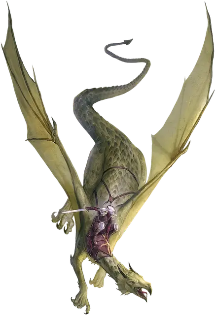

Драконнель
Dragonnel
Большой Дракон, нейтральный

Класс Доспеха 13 (природный доспех)
Хиты 58 (9к10 + 9)
Скорость 30 футов, летая 60 футов
| мод | спас | ||
|---|---|---|---|
| СИЛ | 16 | +3 | +3 |
| ЛОВ | 15 | +2 | +2 |
| ТЕЛ | 12 | +1 | +1 |
| мод | спас | ||
|---|---|---|---|
| ИНТ | 8 | −1 | −1 |
| МДР | 13 | +1 | +1 |
| ХАР | 10 | +0 | +0 |
Навыки Восприятие +3
Чувства слепое зрение 30 футов, тёмное зрение 120 футов, пассивное Восприятие 13
Языки Понимает Драконий и Общий, но не говорит.
Опасность 2 (450 опыта)
Бонус мастерства +2
Особенности
Пролёт. Драконнель не провоцирует атаку, когда он вылетает за пределы досягаемости врага.
Драконнель скакун. С разрешения Мастера персонаж может призвать духа, принимающего форму драконнеля, при накладывании заклинании поиск высшего скакуна [find greater steed], которое появилось в «Руководстве Занатара обо всём».
Действия
Мультиатака. Драконнель совершает две атаки Разрывом.
Разрыв. . Рукопашная атака оружием: +5 к попаданию, досягаемость 5 фт., одна цель. Попадание: 10 (2к6+3) рубящего урона.
Описание
Драконнель отдаленно связаны с цветными, самоцветными и металлическими драконами и напоминают их по форме. Достаточно умные, чтобы понимать речь, но неспособные говорить сами, они — своевольные существа, движимые желанием поесть и развлечься. В дикой природе они придирчивые едоки с переменчивым настроением, склонные играть со своей добычей, прежде чем отправиться на убийство.
В некоторых регионах драконнелей выращивают из яиц для использования в качестве воздушных ездовых животных. Эти одомашненные драконы лояльны до такой степени, что чрезмерно защищают своих всадников. Однако попытки привязать диких драконов к седлу опасны, так как эти существа часто притворяются покорными, прежде чем сбросить своих потенциальных всадников с большой высоты.
Драконнель - это проворное ездовое животное и, естественно, склонен летать по тактике, пикируя, чтобы атаковать клювом и когтями, прежде чем улететь за пределы досягаемости.